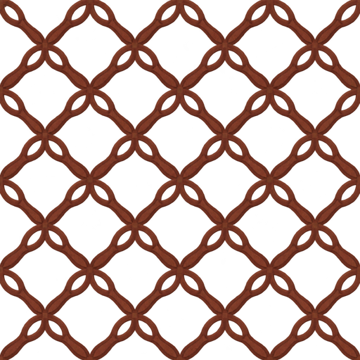
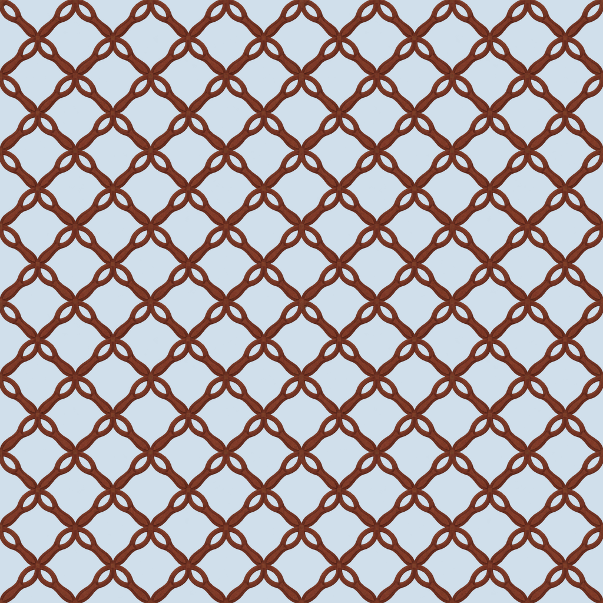
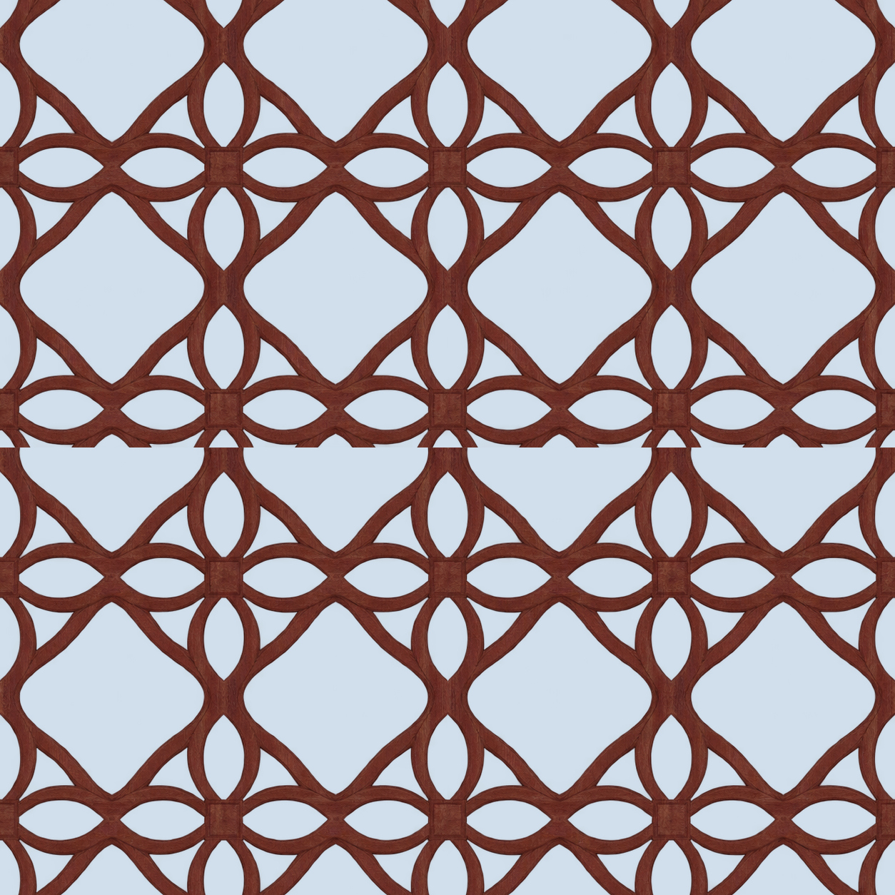
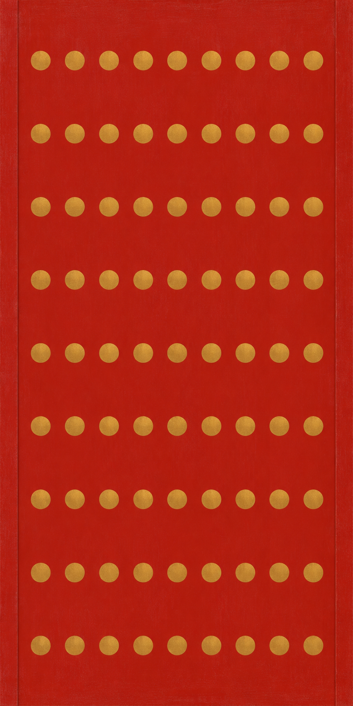
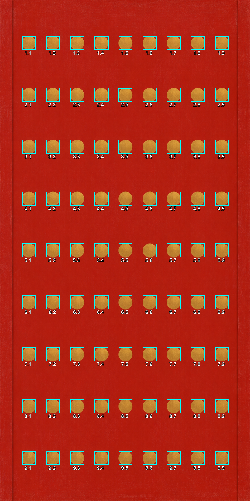
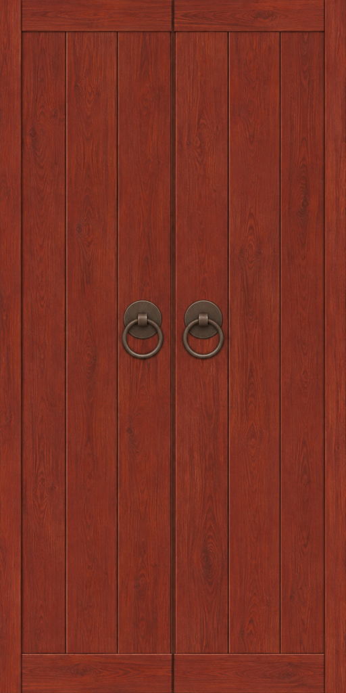

Portin 81 nastaa on tarkistettu. Ristikon pystysauma ja huoneoven kahvojen valo jäävät avoimiksi.
Raportti · Kaikki kuusi generointiohjetta
Ei läpäissyt kaikkia ehtoja — arvioehdokas
Tumma punaruskea kukkaristikko, aidosti läpinäkyvät aukot ja hyvä vaakasuuntainen jatkuvuus.
Muuttamaton alkuperäinen · Kokovienti



Tuottajan visuaalinen tarkistus läpäisty — PT arvioi
Suoraan edestä kuvattu punainen ovilehti, tarkistettu 9 × 9 eli 81 kultaista nastakohtaa; nastojen voimakas valo-/varjoreliefi poistui.
Muuttamaton alkuperäinen · Kokovienti


Ei läpäissyt kaikkia ehtoja — arvioehdokas
Punaruskea puupinta, suora etukuva ja kaksi kahvarengasta toteutuvat.
Muuttamaton alkuperäinen · Kokovienti
